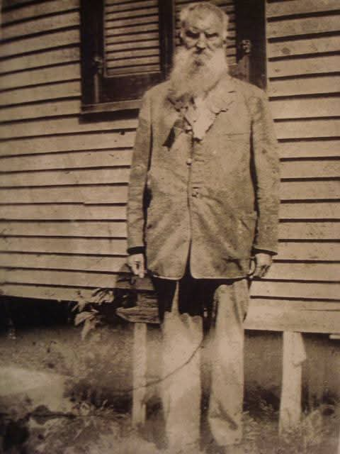

Jehu Barry Sanders
1866–1917 · of Richton, Mississippi
Married Sarah Ann Elizabeth Menasco. Their son William Dewitt Sanders heads the largest branch of the family, with twelve children of his own.
Explore the Jehu line →
The descendants of Joseph Pearson Sanders
and Mary Berry “Polly” Everitt
Every line. Every branch. One family.
This site is the family home for the descendants of Joseph Pearson Sanders and Mary Berry “Polly” Everitt of Mississippi. It is built from the family’s own records — census pages, certificates, letters, photographs, and the research papers of May Sanders Esse — gathered into one archive so that nothing is lost and every branch of the family can find itself here.
Joseph and Polly raised five children who lived to adulthood. Every one of their lines is here — not only the line of the family keeping this site, but all five, and every descendant under them that the records have given us.
Each of Joseph and Polly’s children heads a line of the family. Follow yours — or wander a cousin’s.
1866–1917 · of Richton, Mississippi
Married Sarah Ann Elizabeth Menasco. Their son William Dewitt Sanders heads the largest branch of the family, with twelve children of his own.
Explore the Jehu line →1869–1949 · of Pensacola, Florida
Married Nancy J. Roberts, and later Lula Frances Donaldson. Father of Joseph Survan Sanders and grandfather of a wide Pensacola family.
Explore the Thorough Good line →b. 1874 · the Bates line
Married John Bates. Mother of Percy Lee Bates and Eddie Bates; her descendants spread across Mississippi’s Gulf Coast.
Explore the Lucy line →c. 1881–1946 · of Greene County, Mississippi
Married Mary Elizabeth Stutts in 1906. Father of Eva Maggie, Fannie Mae, Lena Elizabeth, Joseph Everett, and Grover Cleveland Sanders.
Explore the George line →b. 1884 · the McFarland line
Married Emma. Father of Aaron Franklin Sanders and Minnie Lee Sanders, whose marriage to Willie Webb McFarland carries this line to Jacksonville, Florida.
Explore the Thomas line →The photographs, certificates, and papers behind these pages live in the Sanders Family Roots Archive on Google Drive, organised so any relative can browse it: start-here guides, source collections, family lines, records by type, photos, and working files. Family members can contribute their own photos and documents through the archive’s incoming-upload folder.
Our care rules: original documents — above all Aunt May’s papers — are never altered; corrections live in the compiled records, with the conflict shown, never smoothed over. Details of living relatives are kept minimal.